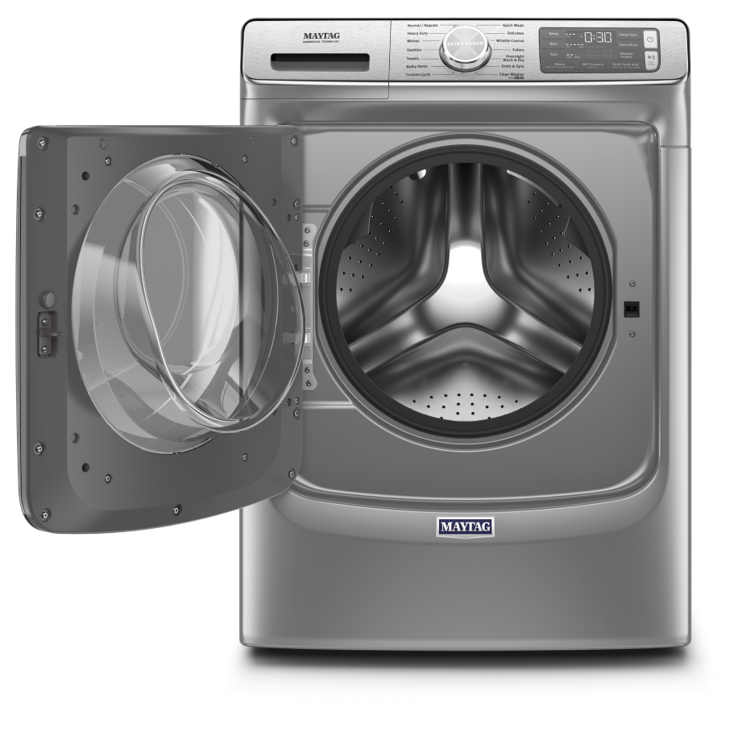
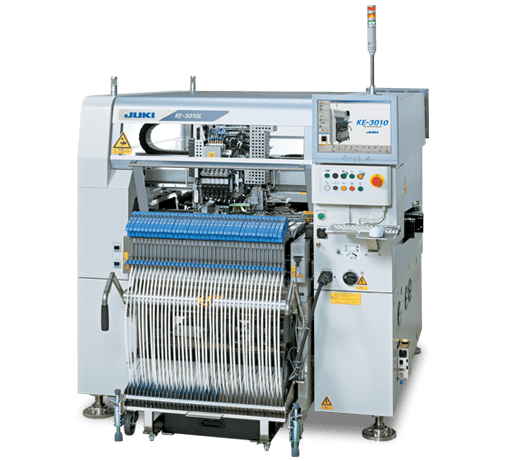
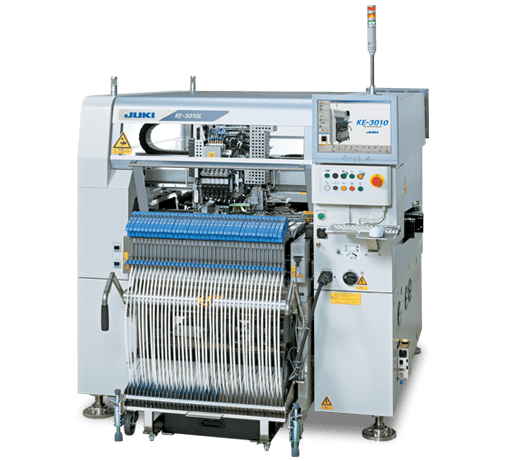

Intelligence Artificielle
(travail en cours)
ordinateur

 

processeur
processeur
contient et execute le code
code

tout ce que sait faire la machine est dans son code
exemple
à définir selon temps disponible : dessin à deux, dessin sur instructions, algorithme du petit déjeuner...
homme | machine
lire
 : -0,0001%
: -0,0001%
écrire
: 1 livre
marcher
: -0,0001%
calculer
: 200 000 000 000 000 000 opérations/seconde
homme | machine
rapidité
précision
adaptabilité
imagination
tous les humains ?

apprentissage
intelligence artificielleordinateur + apprentissage
rapidité

précision
adaptabilité
imagination


outil
intuitif
interactif
en développement


ateliers par niveau
découverte

thématique

développement de projets

pratique
état des possibles
juillet 2019

Questions ?